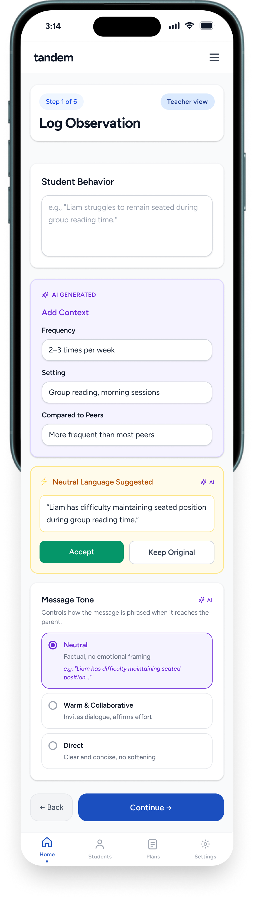

Decision · 01
A guided observe → communicate → act journey
Insight
Communication happens all at once, late, at conferences, so teachers are time-poor and parents feel blindsided.
Decision
Break the exchange into a calm, multi-step journey that mirrors how a concern actually unfolds.
Solution
Nine screens grouped into three acts, each doing a single, low-stakes job:
- Observe: the teacher logs the concern, frequency, examples, the child's strengths, and what they've tried.
- Communicate: the AI drafts the message; the teacher reviews and approves, then the parent receives it in plain language, with developmental context and a few questions to answer.
- Act: the parent adds their home perspective, and both sides build an editable plan together.
Outcome
The journey mirrors how a concern surfaces (notice, talk, act), so neither side carries the whole conversation at once. Later evaluation bore this out: both the real-teacher walkthrough and the synthetic personas gravitated to the structure.
3 acts

Observe: the teacher logs one structured observation.